В процессе создания/обработки изображений мы выполняем некоторую
последовательность элементарных действий, таких как создание нового
изображения, добавление/удаление слоев, выделение областей, создание
текста, применение тех или иных фильтров и т.д., причем эта
последовательность может быть весьма длинной, а если еще и требуется
создать много картинок по одному алгоритму или выполнить однотипную
обработку множества изображений, то, естественно, появляется желание
переложить хотя бы часть однообразной работы на железные плечи
машины.
За примером далеко ходить не надо - графические заголовки для
web-страниц - часто бывает нужно сделать множество картинок, которые
отличаются только текстом. Тот, кто хоть раз это делал, наверняка
задавался вопросом, - а как бы такую штукенцию придумать, чтобы
даешь ей текст, а она тебе - опа - готовый логотип, и вообще, когда
наконец эти компьютеры начнут хоть что-нибудь делать сами, а то даже
пива выпить времени нет!
Вот тут вам на помощь придут скрипты. Скрипт (или сценарий)
представляет собой последовательность инструкций для GIMP. Петь и
танцевать GIMP конечно не станет (возможно это будет реализовано в
следующих версиях), а рисовать картинки будет весьма бойко, надо
только ему точно и корректно указать, что именно надо сделать. Для
"общения" с GIMP можно использовать несколько языков: Scheme, Perl, Python. "Родной" язык для GIMP -
Scheme (читается "ским") - чтобы начать писать скрипты на Scheme не
требуется никакого дополнительного программного обеспечения (кроме
собственно GIMP :) и обычно под Script-Fu подразумевается
программирование именно на Scheme, чтобы работать с Perl или Python
придется установить дополнительные модули.
В поставку GIMP входит довольно большое количество скриптов на
Scheme. Они хранятся в директории
/usr/share/gimp/1.*/scripts. По способу вызова скрипты
делятся на самостоятельные и связанные с изображением.
Самостоятельные скрипты в процессе работы создают новое изображение
и вызываются через главное меню GIMP Xtns->Script-Fu....
Наибольшее количество скриптов представлено в разделе
Xtns->Script-Fu->Logos - это скрипты, создающие
различные текстовые логотипы. Скрипты, связанные с изображением
вызываются через меню изображения, т.е. через меню, которое
появляется, если щелкнуть на изображении правой кнопкой мыши.
Чтобы познакомится с тем, как это все работает, запустим
какой-нибудь предустановленный скрипт, например "imigre-26":
Xtns->Script-Fu->Logos->Imigre-26. В результате
этих действий должно появиться диалоговое окно, позволяющее задать
параметры работы скрипта. Для выбранного нами "imigre-26" это окно
выглядит следующим образом:
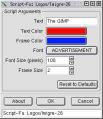
Посмотрите, что написано на кнопке "Font". Если на Вашей машине
шрифт, который используется скриптом Imigre-26 по умолчанию
установлен, на кнопке будет написано название этого шрифта. Если у
Вас нет такого шрифта, на кнопке "Font" будет написано "NOT SET", в
этом случае нужно нажать кнопку "Font" и выбрать один из имеющихся в
Вашей системе шрифтов. Теперь можно смело жать на "Ok", результат
работы будет выглядеть примерно так:
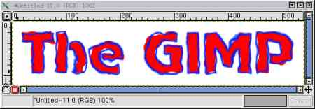
Почти все предустановленные скрипты, работающие с текстом,
используют шрифты из дополнительного набора, который не входит в
комплект поставки GIMP. Эти шрифты можно свободно получить на сайте GIMP и установить, но делать
это вряд-ли стоит, особенно если в изображениях Вам нужны русские
буквы. Так что проверяя работу тех или иных скриптов Вам придется
постоянно менять имена шрифтов. Сделанные вами изменения GIMP будет
помнить в течение сессии, впрочем, прочитав эту статью Вы сможете с
легкостью провести небольшую модернизацию кода предустановленных
скриптов таким образом, что правильные имена шрифтов будут стоять
там "по умолчанию".
Скрипт, который мы только-что испробовали относится к
самостоятельным скриптам. Попробуем теперь скрипт, вызываемый через
меню изображения, для чего создадим новое изображение в градациях
серого и применим к нему скрипт Chrome-it
(Image-menu->Script-Fu->Stencil Ops->Chrome-it)
Результат работы скрипта "Chrome-it" будет выглядеть примерно
так:
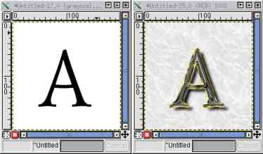
Ну а теперь настало время разобраться, что же "под капотом"...
Обзор Scheme
Scheme - вариант языка программирования LISP.
LISP - это аббревиатура, расшифровывается как
LISt
Processing т.е. язык для обработки списков, существует и
другая расшифровка:
Language of
Idiotic
Silly
Рarenthesis, (язык идиотских глупых скобок),- спорное, но не
лишенное смысла утверждение, - несоблюдение правильного баланса
скобок - один из главных источников ошибок программы, написанной на
LISP и ему подобных.
Короткое лирическое отступление: Как
обычно называются книги про языки программирования -
"Программирование на ..." или "Основы программирования на ..." или,
на худой конец "Освой самостоятельно ...", а вот одна из
основополагающих книг про LISP называется просто и коротко "LISP.
The Language" ("LISP. Язык") - неплохо, правда?
Одна из главных трудностей в изучении Scheme - отсутствие
литературы на русском языке, по крайней мере мне ничего такого не
попалось. Найти что-либо про LISP тоже оказалось проблематично
(исключение - AutoLISP - LISP, используемый в AutoCAD). Ситуация
несколько осложняется еще и тем, что в GIMP используется реализация
Scheme, называемая SIOD (Scheme In One Defun или Scheme In One Day),
которая, мягко говоря, несколько отличается от более популярных
реализаций, так что если Вы нашли в Сети какой-нибудь Scheme-manual,
очень может оказаться, что многое из написанное там не подходит для
SIOD.
SIOD - интерпретатор Scheme в GIMP
Запустить встроенный в
GIMP интерпретатор Scheme можно выбрав в меню главного окна
GIMP:
Xtns > Script-Fu > Console. На экране Вы увидите
что-то вроде:
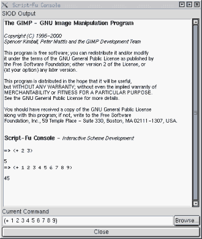
Строка внизу, над которой написано "Current Command"
предназначена для ввода выражений, результаты вычислений будут
отражаться в большом окне. Различные реализации Scheme могут
достаточно сильно отличаться друг от друга, так что, в дальнейшем
говоря "Scheme", мы будем подразумевать именно "SIOD". Теперь
попробуем чего нибудь добиться от интерпретатора, пусть для начала
сложит два числа: 2 и 5, для этого в командную строку введем
следующее:
(+ 2 5) [enter] Почему именно так, станет
ясно чуть позже. В окне вычислений мы увидим:
=> ( + 2 5 )
7
После значка "=>" интерпретатор продублировал то, что
было введено, ну а "7" это, понятное дело, результат
вычислений. Ну вот - первый шаг сделан!
Функции и переменные
То, что мы только что проделали было ни чем иным, как обращением
к функции сложения. Обращение к функции в Scheme в общем случае
выглядит следующим образом:
(имя_функции аргумент_1 аргумент_2 ... аргумент_N)
Арифметические функции
( +, -, *, / )
исключением не являются, чтобы заставить Scheme выполнить какое-либо
арифметическое действие нужно обратится к соответствующей функции,
указав сначала что нужно сделать, а затем - с чем нужно это сделать.
Такая форма записи называется префиксной нотацией. Например, чтобы
вычислить значение математического выражения
в Scheme нужно написать:
(/ 6 (+ 1 (sqrt 4)))
Введя это выражение в строку ввода SIOD получим:
=>(/ 6 (+ 1 (sqrt 4)))
2
Интерпретатор Scheme работает по принципу "прочитать выражение
-> вычислить -> вернуть результат". В данном случае
последовательность действий интерпретатора такова: Увидев выражение
(т.е. нечто, заключенное в круглые скобки), интерпретатор пытается
его вычислить, предполагая, что первый элемент выражения это имя
функции, а дальше перечислены аргументы этой функции. В нашем
примере имя функции - "/", первый аргумент - число
6, а второй аргумент представляет собой выражение
(+ 1 (sqrt 4))
значение которого интерпретатор попытается
вычислить на следующем шаге. Таким образом интерпретатор будет
продвигаться "в глубь" нашего выражения пока не доберется до того,
что он может вычислить сразу, в нашем примере это число
4,
являющееся аргументом квадратного корня. В Scheme числа представляют
сами себя или еще можно сказать - вычисляются сами в себя. Дальше
двигаться некуда, поэтому интерпретатор вернется на предыдущий шаг -
к функции
sqrt. вычислив значение квадратного корня
интерпретатор поднимается на предыдущий уровень и вспоминает, что к
результату вычислений квадратного корня нужно прибавить единицу,
проделав это интерпретатор выполняет следующий шаг назад и делит
число
6 на полученный на предыдущем шаге результат. Как
только интерпретатор окажется на самом верху, в руках у него будет
значение выражения, которое он и вернет, как результат вычислений.
Таким образом вычисления происходят "задом на перед" начиная с
самого "глубокого" выражения, поэтому читать выражения Scheme
следует не слева направо, как обычный текст, а "изнутри наружу".
Короткое лирическое отступление: Если
вдруг на улице к Вам подойдет человек и спросит что-нибудь вроде
"Площадь Пушкинскую на попасть могу я как?" Очень может быть, что он
слишком увлекается программированием на Scheme.
В выражениях можно использовать переменные. Имя переменной
представляет собой цепочку символов. Функция set! связывает
переменную с ее значением возвращая при этом значение переменной:
(set! Radius 25)
связывает переменную
Radius c ее значением - числом
25. В окне SIOD это выглядит следующим образом:
=> (set! Radius 25)
25
Теперь мы можем использовать переменную Radius в выражениях:
=> Radius
25
=> (sqrt Radius)
5
=>(/ 50 Radius)
2
Когда в процессе вычислений интерпретатор встречает некую цепочку
символов, он предполагает, что имеет дело с переменной и пытается ее
вычислить. Если к этому моменту переменная связана с каким-либо
значением, результатом вычисления переменной будет это самое
значение, в противном случае интерпретатор выдаст сообщение об
ошибке "несвязанная переменная":
=> (sin x)
ERROR: unbound variable (errorobj x)
=> (set! x 0)
0
=> (sin x)
0
=> (cos x)
1
В Scheme понятие переменная имеет более широкую трактовку по
сравнению с "нормальными" языками программирования, это не просто
коробочка, в которой хранятся данные, например, можно связать
переменную с функцией:
=> (set! func sin)
#{subr_1 sin}
=> (func (/ *pi* 2))
1
В этом примере переменная
func связывается с
последовательностью символов
sin, которая является именем
для функции вычисления синуса, поэтому, если мы потребуем вычислить
func от пи-пополам, то вычислит-ся синус. С точки зрения
Scheme переменные и функции представляют собой примерно одно и тоже,
и такое положение вещей может быть чревато неприятностями. Например,
если Вы для своей переменной придумаете имя, совпадающее с именем
какой-нибудь предопределенной функции и свяжете эту переменную с
каким-нибудь значением (а Scheme сделает это не пикнув), то после
этого функция-тезка вашей переменной перестанет существовать:
=> (set! sqrt 2)
2
=> (sqrt 4)
ERROR: bad function (see errobj)
После подобных экспериментов интерпретатор придется
перезапустить.
Все это время речь шла о глобальных переменных, т.е. о
переменных, к которым можно обратиться из любого места программы. В
Scheme можно использовать и локальные переменные, делается это при
помощи конструкции let*:
(let* ((переменная1 значение)
(переменная2 значение) ... )
(выражение))
Например:
=>(let* ((a 3) (b 4) (c 5)) (+ a b c))
12
=>a
ERROR: unbound variable (errorobj a)
В данном примере область действия переменных
a, b, c
ограничена скобками, охватывающими
let*. Попытка вычислить
значение переменной за пределами этой области приводит к ошибке.
Если Вы используете одну и ту же переменную как локальную и как
глобальную, точнее одно и то же имя для локальной и глобальной
переменных, то внутри области действия локальной переменной в
процессе вычислений она будет связываться со своим локальным
значением, а за пределами этой области с глобальным:
=>(set! a 10)
10
=>(set! b 20)
20
=>(let* ((a 1) (b 2)) (+ a b))
3
=>(+ a b)
30
Для успешных вычислений нужно, чтобы к моменту вычисления
используемые переменные были связанными, а имена функций
соответствовали либо функциям предопределенным в Scheme, либо
функциям, определенным в вашей программе. Определить свою
собственную функцию можно следующим образом:
(define (имя_функции арг1 арг2 ... аргN) (выражение))
Например определим функцию, возводящую число в квадрат:
=>(define (sqr x) (* x x))
#{CLOSURE (x) (* x x)}
=>(sqr 3)
9
Как только функция определена Вы можете использовать ее наравне с
предопределенными Scheme функциями, например для определения других
функций:
=>(define (pifagor a b) (sqrt (+ (sqr a) (sqr b))))
#{CLOSURE (a b) (sqrt (+ (sqr a) (sqr b)))}
=>(pifagor 3 4)
Определенная выше функция вычисляет длину гипотенузы по
заданным длинам катетов.
Строки
До сих пор мы оперировали числами, теперь поговорим о строках.
Строка в Scheme это последовательность символов, заключенная в
кавычки:
"это строка"
Строки (как и числа) вычисляются "сами в себя":
=>"I'm a string"
"I'm a string"
Соединить несколько строк в новую строку можно при помощи функции
string-append:
=> (set! qstr (string-append "What " "is " "Script-Fu " "?"))
"What is Script-Fu ?"
=> qstr
"What is Script-Fu ?"
В приведенном выше примере переменная qstr связывается со
строкой, составленной функцией string-append из четырех подстрок.
Длину строки (количество символов) можно определить при помощи
функции string-length:
=> (string-length qstr)
19
Функция (substring index1 index2) позволяет извлечь из
строки подстроку. При этом index1 это номер позиции
начального символа подстроки, а index2=index1+длина
подстроки. При этом позиции символов в строке считаются с нуля,
т.е. первый символ стоит в нулевой позиции. Например, чтобы извлечь
первые четыре символа из строки qstr (точнее из строки,
которая связана с переменной qstr) нужно написать:
=> (substring qstr 0 4)
"What"
В следующем примере из строки qstr извлекается 11 последних
символов:
=> (substring qstr (- (string-length qstr) 11) (string-length qstr))
"Script-Fu ?"
Если индексы определены неправильно, т.е. значение начального
индекса будет меньше нуля, или значение конечного индекса будет
превышать длину строки, вызов функции substring приведет к ошибке.
Списки, car и cdr
Отдельные величины различных типов могут быть объединены в
список. Список в Scheme выглядит следующим образом:
(1 2 "three" "four" 5)
этот список содержит 5 элементов, которыми являются числа и
строки. По внешнему виду список представляет собой просто перечень
некоторых величин разрешенных типов, заключенный в круглые скобки,
однако на деле список это довольно хитрая конструкция. Формально
список можно определить следующим образом: Список это некоторая
структура для представления данных, которая может либо не содержать
ничего (это называется пустой список), либо состоит из головы и
хвоста, причем голова является величиной разрешенного типа, а хвост
представляет собой список.
Пустой список записывается как пара круглых скобок - ().
В приведенном выше примере списка число 1 это голова, а
список (2 "three" "four" 5) - это хвост. В списке
("alone"), содержащем всего один элемент строка "alone" это
голова, а хвост представляет собой пустой список. Поскольку список
является полноправным типом данных, он может входить в качестве
элементов в другой список. Так список ((1 2) ("one" "two")) состоит
из двух элементов, каждый из которых, в свою очередь, является
списком. Голова в данном случае это список (1 2), а хвост -
(("one" "two")).
Список можно создать при помощи функции list :
=> (list 1 2 "three")
(1 2 "three")
Или определить "напрямую":
=> '(1 2 "three")
(1 2 "three")
Одиночная кавычка перед скобками указывает интерпретатору, что
далее следует список, а не функция. Если бы этой кавычки не было, то
интерпретатор попытался бы вычислить
(1 2 "три")
как функцию с именем
1, что привело
бы к ошибке. Перед пустым списком кавычку ставить необязательно:
=> '()
()
=> ()
()
Списки можно связывать с переменными:
=> (set! mylist '(3 4 5))
(3 4 5)
или
=> (set! mylist (list 3 4 5))
(3 4 5)
=>mylist
(3 4 5)
Основные функции при помощи которых осуществляется доступ к
элементам списка называются car и cdr.
Функция car возвращает голову списка, а cdr хвост:
=> (car '(3 4 5))
3
=> (cdr '(3 4 5))
(4 5)
=> (car '((1 "uno") (2 "dos") (3 "tres")))
(1 "один")
=> (cdr '((1 "uno") (2 "dos") (3 "tres")))
((2 "dos") (3 "tres"))
=> (car '("only one !"))
"only one !"
=> (cdr '("only one !"))
()
В соответствии с приведенным выше определением второй элемент
списка является головой хвоста (а третий соответственно головой
хвоста хвоста :), чтобы его достать нужно вызвать функции
cdr и car последовательно:
=> (car (cdr '(1 2 3)))
2
=> (car (cdr (cdr '(1 2 3))))
3
Несколько последовательных вызовов car и cdr
можно записать в виде одной функции, последняя строчка в предыдущем
примере будет эквивалентна следующей записи:
=> (caddr '(1 2 3))
3
В такой записи буква "a" соответствует вызову car, а "d" -
вызову cdr.
Добавить новый элемент в существующий список можно при помощи
функции cons, новый элемент будет добавлен в голову:
=> (cons 0 '(1 2 3))
(0 1 2 3)
=> (cons '(0 1) '(2 3))
((0 1) 2 3)
Функция append позволяет объединить несколько списков в
один:
=> (append '(0 1) '(2 3) '(4 5))
(0 1 2 3 4 5)
Ветвление и проверка условий.
Организовать ветвление в Scheme-программе можно при помощи
функции if, которая имеет следующий синтаксис:
(if (условие) (выражение 1) (выражение 2))
При обработке интерпретатором функции if сначала вычисляется
условие, если результатом вычисления условия является истина -
вычисляется выражение 1, если ложь - выражение 2:
=> (set! x 10)
10
=> (set! y 25)
25
=> (if (> x y) (- x y) (- y x))
15
=> (set! y 7)
7
=> (if (> x y) (- x y) (- y x))
3
Для функций, проверяющих логические значения действует следующее
соглашение: ложь эквивалентна пустому списку, все, что не ложь, то
является истиной:
=> (if () "истина" "ложь")
"ложь"
=> (if 0 "истина" "ложь")
"истина"
=> (if 23 "истина" "ложь")
"истина"
=> (if "what?" "истина" "ложь")
"истина"
Обратите внимание, что ноль это истина!
Для проверки соотношений можно использовать функции <, >,
<=, >=, =, а также функции not, or и and выполняющие операции
отрицания, логического "или" и логического "и" соотвественно.
Использование файлов для хранения кода
Как вы наверное успели заметить, работать с окном SIOD в GIMP не
слишком удобно - все, что Вы хотите ввести нужно записывать в одну
строчку - это окно скорее предназначено для того, чтобы вызывать
ранее определенные функции. Чтобы чувствовать себя более свободно
код можно хранить в файлах. Обычно код программы на Scheme
представляет собой набор определений функций и переменных и может
храниться в одном или нескольких текстовых файлах, содержимое этих
файлов может быть загружено в интерпретатор, после чего Вы сможете
обращаться к определенным Вами функциям. Посмотрим на примере, как
это все работает:
Вернемся к уже рассмотренному примеру про функцию вычисления
квадрата и функцию, вычисляющую длину гипотенузы прямоугольного
треугольника по известным длинам катетов. Поместим определения этих
функций в файл. Для создания/редактирования Scheme-программ
подойдет, в принципе, любой текстовый редактор, но лучше
использовать такой, который умеет подсчитывать баланс скобок, при
написании более или менее длинных скриптов такая возможность весьма
облегчает жизнь. XEmax имеет специальный режим Scheme-mode, так что
он и синтаксис будет подсвечивать. Вполне подойдут Fte или Nedit, я
использую Nedit. Итак, наш файл будет содержать следующий текст:
;вычисление квадрата числа x
(define (sqr x)
(* x x)
)
;вычисление длины гипотенузы по длинам катетов a и b
(define (pifagor a b)
(sqrt (+ (sqr a) (sqr b)))
)
Как видите, размещая определения в файле Вы можете свободно
добавлять дополнительные пробелы, переводы строк и комментарии
(строчки, начинающиеся с символа точка-с-запятой интерпретатором
игнорируются), организуя код в соответствие с вашими представлениями
о том, что такое есть "хорошо читаемая программа".
Запишем только что созданный файл в домашней директории дав ему
имя pifagor.scm. Чтобы получить доступ к определенным в нем
функциям, в окне SIOD нужно ввести:
=>(load "pifagor.scm")
()
Теперь можно попробовать вызвать функции из командной строки:
=>(pifagor 3 4)
5
(sqr 25)
625
Если вы хотите превратить набор определений в программу, т.е,
чтобы сразу после загрузки выполнялись какие-нибудь вычисления, то
файл
pifagor.scm следует дополнить вызовами:
;вызовы функции pifagor и печать возвращаемого значения
(print (pifagor 3 4))
(print (pifagor 7 9))
(print (pifagor 11 15))
(print (pifagor 17 21))
Теперь результат загрузки будет следующий:
=>(load "pifagor.scm")
5
11.4018
18.6011
27.0185
Повторяющиеся вычисления. Рекурсия и цикл.
Организация повторяющихся вычислений при помощи рекурсии
предполагает определение функции через саму себя. Проще всего это
проиллюстрировать на примере, простой, но показательный пример,
который приводят очень часто - рекурсивное вычисление факториала.
Если кто забыл - факториал числа N (N>=1) есть произведение всех
чисел натурального ряда от 1 до N, факториал нуля считается равным
единице:
0! = 1
N! = 1*2*3*...*N
Рекурсивное определение факториала можно сформулировать
следующим образом:
1. Факториал нуля равен 1.
2. Факториал
натурального числа N, отличного от нуля равен произведению этого
числа на факториал N-1. (
N! = N*(N-1)!)
В переводе на Scheme это определение принимает следующий вид:
;рекурсивная функция, вычисляющая факториал
(define (my-factorial n)
(if (= 0 n) 1
(* n (my-factorial (- n 1)))
)
)
Рекурсивный подход очень удобен для операций со списками,
поскольку сами списки есть структуры рекурсивные (см. определение в
разделе про списки). В качестве примера можно привести рекурсивное
определение операции обращения списка:
1. Если список пуст, то
обращай его - не обращай, все равно он останется тем же самым пустым
списком, т.е. делать в этом случае ничего не нужно.
2. Если
список не пуст то обращенный список получится, если взять его голову
и добавить ее к обращенному хвосту (другими словами: вставить в
хвост обращенного хвоста :).
В переводе на Scheme это выглядит следующим образом:
;рекурсивная Функция, обращающая список
(define (my-invert-list lst)
(if (null? lst) lst
(append (my-invert-list (cdr lst)) (list (car lst)))
)
)
Использованная в этом определении функция
(null? lst)
возвращает значение "истина", если ее аргумент есть пустой список и
"ложь" во всех остальных случаях.
Если нужно повторить какие-либо действия заданное число раз,
также можно использовать рекурсию. Пусть, например нам требуется N
раз напечатать строку. Вот рекурсивное определение такого
действия:
1. Если N равно 1, напечатать строку.
2. Если N не
равно 1, напечатать строку, затем выполнить функцию печати строки
для N-1.
Предполагается, естественно, что N натуральное число
большее или равное 1. На Scheme это выглядит следующим образом:
;рекурсивная функция, печатающая строку str n раз
(define (print-n-str n str)
(if (= n 1) (print str)
(begin
(print str)
(print-n-str (- n 1) str)
)
)
)
Приведенные примеры рекурсивный функций находятся в файле example.scm. Если вы
хотите посмотреть, как это все работает, сохраните его в своей
домашней директории, затем загрузите в SIOD при помощи команды (load
"example.scm"). Теперь можно вызывать функции:
=>(my-factorial 0)
1
=>(my-factorial 2)
2
=>(my-factorial 4)
24
=>(my-invert-list '("last" "becomes" "first"))
("first" "becomes" "last")
=>(print-n-str 3 "Hello")
"Hello"
"Hello"
"Hello"
()
Для организации циклов служит конструкция while:
(while (условие) (выражение1)...(выражениеN))
Последовательность выражений
(выражение1)...(выражениеN) будет циклически вычисляться
пока
(условие) имеет значение "истина". В следующем примере
при помощи конструкции
while строится список RL из N
случайных чисел в диапазоне от 0 до 255. (Случайное число в
диапазоне 0...N в Scheme можно получить вызвав функцию
(rand
N)):
=>(set! N 10)
10
=>(set! RL '())
()
=>(set! i 0)
0
=>(while (< i N) (set! i (+ i 1)) (set! RL (cons (rand 255) RL)))
()
=>RL
(74 153 27 117 119 130 82 208 212 5)
В начале список RL пуст, в процессе вычислений на каждом шаге
цикла генерируется случайное число и добавляется в голову списка RL
при помощи функции cons.
На этом мы закончим беглый обзор Scheme и перейдем к манипуляциям
с изображениями.
Программные манипуляции с изображениями
Доступ к функциональным возможностям GIMP
В GIMP определен ряд функций для работы с изображениями.
Собственно, "ряд" не совсем подходящее слово, правильнее было бы
сказать, что GIMP предлагает огромную кучу функций для работы с
изображениями. совокупность этих функций образует т.н. "процедурную
базу данных GIMP" (PDB). Для просмотра процедурной базы данных нужно
вызвать DB Browser выбрав в главном меню пункт:
Xtns > DB Browser
или нажав кнопку "Browse ..." в юго-западном углу консоли
SIOD, в этом случае в окне DB Browser'а появится дополнительная
кнопка "apply", при нажатии которой имя выбранной Вами функции будет
скопировано в командную строку SIOD вместе с "заготовкой" для ввода
аргументов.
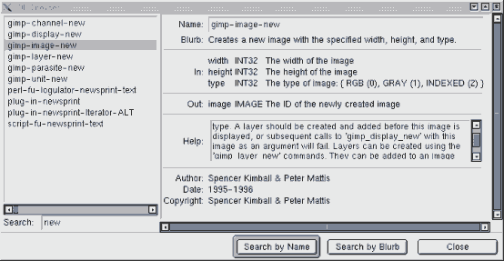
Окно DB Browser'а разделено на две части, в правой части
представлен список имен доступных функций, в левой - информация о
функции: Имя (Name), краткое описание выполняемых действий (Blurb)
перечень входных (in) и выходных (out) параметров, данные об авторе,
времени создания и копирайте. Имеется также окошко "Help", где
представлена более или менее подробная информация о функции и ее
аргументах. Список достаточно велик, но для облегчения жизни
предусмотрена возможность поиска (точнее - фильтрации) по имени или
по краткому описанию. Имена даны функциям по принадлежности и по
выполняемому действию, так что по имени функции, как правило,
понятно чего от нее ждать. Если имя функции начинается со слова
"gimp" - это "родная" функция GIMP, "plug-in" - это обычно фильтры,
"perl-fu" - расширения, написанные на Perl, "script-fu" - как Вы
наверное уже догадались - расширения, написанные на Scheme. Имена
также содержат указание на объект с которым функция работает, т.е.,
например, если Вам нужно что-то сделать со слоями, искать следует по
имени, указав строку поиска "layer", чтобы найти функции, работающие
с выделенными областями - "select", и т.д.
Для первого знакомства попробуем самую простую вещь: создадим
новое изображение заданных размеров, залитое заданным цветом. Делать
это мы будем используя командную строку SIOD.
Действия, которые производят функции не всегда эквивалентны
действиям, которые выполняются в интерактивном режиме при вызове
соответствующей команды через меню, например, чтобы создать новое
изображение (что делается в интерактивном режиме за один "клик")
потребуется четыре шага. Посмотрим как все это работает.
Сначала нужно создать новое изображение,- соответствующая функция
называется gimp-image-new. DB Browser сообщит нам, что эта
функция предназначена для создания нового изображения указанных
размеров и типа, она имеет три входных параметра:
width - ширина изображения в пикселах - целое
число;
height - высота изображения в пикселах - целое
число;
type - тип изображения - целое число.
Для типа изображения приведен перечень возможных значений и имена
предопределенных переменных, которые можно использовать вместо чисел
для лучшей читаемости программ:
RGB - соответствует 0 - будет создано цветное
изображение в режиме RGB;
GRAY - соответствует 1 - будет создано
изображение в градациях серого;
INDEXED - соответствует 2 - будет создано
индексированное изображение.
Возвращает эта функция один параметр - идентификационный номер
(ID) вновь созданного изображения. Попробуем создать новое RGB
изображение размером 300х150 точек:
=>(gimp-image-new 300 150 RGB)
(1)
GIMP создал требуемое изображение, его идентификационный номер
в данном случае 1.
Теперь в созданное изображение нужно поместить хотя-бы один слой.
Создать новый слой можно при помощи функций
gimp-layer-new
, которая имеет следующие входные
параметры:
image - ID изображения в котором создается слой;
width - ширина слоя в пикселах;
heidht - высота слоя в пикселах,- в GIMP размеры
слоев могут отличаться от размеров изображения;
type - тип слоя;
name - имя слоя - строка;
opacity - прозрачность слоя - число в пределах от
0 до 100, причем 100 соответствует непрозрачному слою;
mode - режим комбинирования нового слоя с
существующими слоями. Обычно этот параметр имеет значение NORMAL :).
Параметр "тип слоя" (type) может принимать следующие значения:
RGB_IMAGE - цветной слой в режиме RGB;
RGBA_IMAGE - цветной слой в режиме RGB-альфа, в
таком слое незакрашенные участки будут прозрачными,- работая с альфа
слоем Вы как-бы рисуете на прозрачной пленке. Степень прозрачности
закрашенных участков определяется параметром opacity;
GRAY_IMAGE - слой в градациях серого;
GRAYA_IMAGE - альфа-слой в градациях серого;
INDEXED_IMAGE - слой содержащий индексированные
цвета;
INDEXEDA_IMAGE - альфа-слой содержащий
индексированные цвета.
Возвращает эта функция идентификационный номер созданного слоя.
Создадим для нашего изображения новый слой:
=>(gimp-layer-new 1 300 150 RGB_IMAGE "Background" 100 NORMAL)
(2)
Новый слой с именем "Background" успешно создан, его ID в
данном случае - 2.
Теперь слой нужно встроить в изображение. Это делается при помощи
функции gimp-image-add-layer. Эта функция имеет три входных
параметра:
image - ID изображения;
layer - ID слоя;
position - позиция слоя в изображении
относительно других слоев.
Из Help'а мы узнаем, что эта функция встраивает слой в
изображение в указанную позицию, значение position равное
-1 приведет к тому, что новый слой будет вставлен в верхушку стэка
слоев, т.е. будет находиться выше всех, Кроме того, слои, не имеющие
альфа-канала (т.е. прозрачности) нужно всегда вставлять в позицию 0
и тип слоя должен соответствовать типу изображения, иными словами не
надо пытаться в серое изображение вставить цветной слой.
В нашем случае нужно встроить слой с ID = 2 в изображение c ID =
1 поместив слой на нижний (нулевой) уровень:
=> (gimp-image-add-layer 1 2 0)
()
Теперь новый слой нужно очистить при помощи функции
gimp-edit-clear, имеющей только один входной параметр:
drawable - drawable это доступная для рисования
область, это может быть слой, выделенная область или плавающая
выделенная область, в зависимости от того, что мы хотим очистить, в
данном случае - слой.
Эффект, произведенный функцией gimp-edit-clear, зависит
от типа слоя: слой содержащий альфа-канал в результате очистки
станет прозрачным, а RGB слой будет залит цветом фона.
В нашем случае нужно очистить слой c ID = 2:
=>(gimp-edit-clear 2)
()
Новое изображение готово, теперь можно его показать:
=>(gimp-display-new 1)
(1)
Функция
gimp-display-new создает на экране новое окно
и выводит в нем изображение ID которого задано ей в качестве
входного параметра. Возвращает эта функция ID окна.
В результате проделанных манипуляций на экране должно появиться
окно, содержащее изображение в режиме RGB, размером 300х150 точек,
состоящее из одного слоя, который заполнен цветом фона.
Первый скрипт
Стратегия дальнейших действий теперь более или
менее ясна: все проделанные выше действия нужно оформить в виде
функции, которая бы, в свою очередь, вызывала функции из процедурной
базы данных GIMP в нужной нам последовательности, а возвращаемые ими
значения мы бы запоминали в переменных. Все это мы сейчас и
проделаем, однако сначала пара замечаний. Обратите внимание на
значения, возвращаемые функциями, работу которых мы исследовали в
предыдущем разделе - в частности
(gimp-image-new 300 150
RGB) вернула (1) - это не просто единица, это список, состоящий
из одного элемента, вообще
все функции из процедурной базы GIMP
возвращают список, даже если этот список состоит из одного
элемента или вообще пустой, так что если мы хотим связать
возвращенное функцией из PDB значение с переменной, а потом
использовать эту переменную в качестве аргумента другой функции,
требуется сначала "достать" нужное значение из списка. Сделать это
можно, например так:
...
(set! x (car (gimp-image-new 300 150 RGB)))
...
или так:
(let*
(
(img (car (gimp-image-new x y RGB)))
)
( .... )
)
если нам нужен первый элемент из списка возвращаемых
параметров. И еще, если мы хотим, чтобы наши скрипты вели себя
аккуратно, то имеет смысл запоминать текущие параметры GIMP (цвета
background'а и foreground'а, градиенты, образцы заливок и т.д.),
если в процессе работы скрипт меняет эти параметры, а в конце
восстанавливать их прежние значения. Кроме того в процессе обработки
GIMP записывает информацию для UNDO, запись этой информации принято
отключать на время работы скрипта, по крайней мере так делается во
всех скриптах, входящих в поставку GIMP. С учетом всего выше
сказанного вернемся к нашей функции, вот комментированный текст:
;функция создающая новое изображение размером x на y
;заполненное цветом col
(define (my-new-image x y col)
(let*
(
;запоминаем текущий цвет фона в переменной oldbg
(oldbg (car (gimp-palette-get-background)))
;создаем новое изображение
(img (car (gimp-image-new x y RGB)))
;создаем новый слой
(layer (car (gimp-layer-new img x y RGB_IMAGE "Bg" 100 NORMAL)))
)
;запрещаем запись информации undo для изображения img
(gimp-image-undo-disable img)
;встраиваем слой layer в изображение img
(gimp-image-add-layer img layer 0)
;устанавливаем col в качестве цвета фона
(gimp-palette-set-background col)
;выполняем очистку слоя layer
(gimp-edit-clear layer)
;восстанавливаем старое значение цвета фона
(gimp-palette-set-background oldbg)
;выводим изображение img на экран
(gimp-display-new img)
;разрешаем запись информации undo для изображения img
(gimp-image-undo-enable img)
)
)
Функция называется
my-new-image и имеет три
аргумента:
x, y, col - размер изображения по горизонтали,
по вертикали и цвет, которым изображение залито. Чтобы иметь
возможность попробовать
my-new-image в работе нужно
загрузить в SIOD файл, где располагается ее описание (example.scm):
=>(load "example.scm")
()
(my-new-image 200 120 '(20 200 200))
(1)
Цвет задается в виде списка: '(R G B), где R,G,B - красная,
зеленая и синяя составляющие - целые числа от 0 до 255.
my-new-image вернула нам (1) - это та величина, которую
возвращает последняя из вызываемых функций -
(gimp-image-undo-enable img), но нас в данном случае больше
интересует "побочный эффект", а именно созданное изображение:
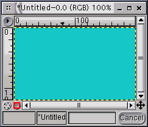
Уже почти совсем настоящий скрипт, не хватает только интерфейса и
возможности запускать все это дело из меню.
Интерфейс и запуск из меню
Для организации интерфейса GIMP
предлагает набор интерактивных объектов: поля, спинеры, слайдеры,
выпадающие списки и разного рода кнопочки. Пункт меню, который будет
запускать скрипт можно расположить в любом месте меню главного окна
GIMP или меню изображения. Делается все это при помощи
регистрационной функции
script-fu-register, которая имеет
следующий синтаксис:
(script-fu-register
"Имя главной функции скрипта"
"Пункт меню, который будет запускать скрипт"
"Короткое описание выполняемых скриптом действий"
"Информация об авторе"
"информация о копирайте"
"дата создания"
"тип изображения с которым работает скрипт"
элемент интерфейса "подпись к элементу интерфейса" "значение по умолчанию"
...
элемент интерфейса "подпись к элементу интерфейса" "значение по умолчанию"
)
Функция
script-fu-register должна быть вызвана после
описания главной функции скрипта. Имя главной функции можно выбрать
любое, но обычно имена для скриптов, написанных на Scheme принято
начинать с "script-fu". Для нашего простого примера окончательный
текст скрипта будет выглядеть следующим образом (файл с примером newimg.scm):
;скрипт создающий новое изображение размером x на y
;заполненное цветом col
(define (script-fu-my-new-image x y col)
(let*
(
;запоминаем текущий цвет фона в переменной oldbg
(oldbg (car (gimp-palette-get-background)))
;создаем новое изображение
(img (car (gimp-image-new x y RGB)))
;создаем новый слой
(layer (car (gimp-layer-new img x y RGB_IMAGE "Bg" 100 NORMAL)))
)
;запрещаем запись информации undo для изображения img
(gimp-image-undo-disable img)
;встраиваем слой layer в изображение img
(gimp-image-add-layer img layer -1)
;устанавливаем col в качестве цвета фона
(gimp-palette-set-background col)
;выполняем очистку слоя layer
(gimp-edit-clear layer)
;восстанавливаем старое значение цвета фона
(gimp-palette-set-background oldbg)
;выводим изображение img на экран
(gimp-display-new img)
;разрешаем запись информации undo для изображения img
(gimp-image-undo-enable img)
)
)
;регистрация в PDB
(script-fu-register "script-fu-my-new-image" ;имя функции
"‹Toolbox›/Xtns/Script-Fu/Examples/New image" ;место в меню
"New colored image creation" ;короткое описание
"FatCat" ;автор
"" ;информация о копирайте
"2001" ;дата создания
"" ;тип изображения, с
;которым работает
;Вид объекта интерфейса Название Значение по умолчанию
SF-VALUE "X-size" "150"
SF-VALUE "Y-size" "70"
SF-COLOR "Color" '(50 100 250)
)
Аргументы функции
script-fu-register в нашем случае
следущие:
Имя главной функции - наш скрипт состоит только из одной функции,
она же и главная - script-fu-register;
Место в меню - ‹Toolbox› означает, что запускающий пункт будет
расположен в иерархии меню главного окна GIMP, в данном случае в
разделе Xtns/Script-Fu/ будет создан раздел Examples, в котором
будет размещен пункт New image;
Краткое описание, информация об авторе, копирайте и дата создания
никакого влияния на работу скрипта не оказывают, так что в принципе
эти строки можно оставить пустыми - "";
Тип изображения с которым работает скрипт может принимать
значения:
RGB - цветное изображение;
GRAY - изображение в градациях серого;
RGBA - цветное изображение c с альфа-каналом;
GRAYA - изображение в градациях серого с
альфа-каналом;
INDEXED - индексированное
изображение;
Пустая строка означает, что скрипт работает с любым
типом изображения. Этот аргумент имеет смысл для скриптов, которые
работают с уже существующим изображением (мы рассмотрим их позже), в
текущем примере изображение создается самим скриптом и аргумент тип
изображения лучше оставить пустой строкой - "".
Далее следует описание интерфейса, описание каждого элемента
интерфейса состоит из трех параметров, причем число этих описаний
(троек) должно быть равно количеству аргументов главной функции
скрипта и последовательность их описания должна соответствовать
последовательности аргументов. В нашем примере главная (и
единственная) функция скрипта имеет три аргумента:
x - размер изображения по горизонтали;
y - размер изображения по вертикали;
col - цвет, которым должно быть заполнено
изображение;
Соответственно мы должны описать три элемента
интерфейса:
x - размер изображения по
горизонтали - тип элемента интерфейса SF-VALUE, подпись перед этим
элементом "X-size", значение по умолчанию "150";
x - размер изображения по вертикали - тип
элемента интерфейса SF-VALUE, подпись перед этим элементом "Y-size",
значение по умолчанию "70";
x - цвет
изображения - тип элемента интерфейса SF-COLOR, подпись перед этим
элементом "Color", значение по умолчанию '(50 100 250);
При старте GIMP просматривает директории, в которых расположены
скрипты и поочередно вызывает соответствующие функции
script-fu-register для каждого из них. Таких директорий две
- ./gimp-1.2/scripts в Вашей домашней директории и
/usr/share/gimp/1.2/scripts - это системная директория для
скриптов на Scheme, в ней лежат файлы "фабричных" скриптов, которые
поставляются вместе с GIMP. Местоположение системной директории
может быть различным в зависимости от дистрибутива, которым Вы
пользуетесь, чтобы точно узнать, где она находится на Вашей машине,
посмотрите в консоли SIOD значение переменной
gimp-data-dir.
Если вызов регистрационной функции не привел к ошибке имя главной
функции скрипта заносится в процедурную базу данных GIMP и в меню
резервируются соответствующие пункты. Зарегистрированные скрипты
можно вызывать как через меню, так и через командную строку консоли
SIOD, а также вызывать определенные в скрипте функции из других
скриптов.
Таким образом, чтобы сделать вновь написанный скрипт доступным
для GIMP, нужно поместить файл с его описанием в одну из указанных
выше директорий. Если Вы поместите скрипт в домашней директории в
./gimp-1.2/scripts скрипт будет доступен только тому
пользователю, которому эта директория принадлежит. Если скрипт
расположить в системной директории - он будет доступен всем
пользователям на Вашей машине.
В меню Xtns > Script-Fu есть пункт "Refresh", выбор этого
пункта заставит GIMP перечитать директории, в которых хранятся
скрипты и перерегистрировать их, так что если вы устанавливаете
новые скрипты при запущенном GIMP или вносите в них изменения, не
забывайте вызывать "Refresh".
Поместим файл с нашим примером (newimg.scm) в
./gimp-1.2/scripts. Теперь можно запустить GIMP. В меню
главного окна должен появиться новый пункт
/Xtns/Script-Fu/Examples/New image, который запустит наш
скрипт:
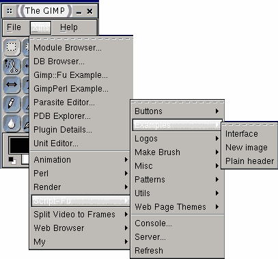
Окно скрипта будет выглядеть следующим образом:
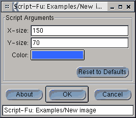
Поля X-size, Y-size и кнопка Color это элементы интерфейса,
описанные нами в регистрационной функции. Вы можете менять значения
размеров изображения и фонового цвета - при нажатии на кнопку Color
вы получите диалог выбора цвета. Нажатием кнопки "Reset to defaults"
аргументы скрипта возвращаются к значениям, заданным по умолчанию.
По нажатию кнопки "About" будет показано окошко с информацией о
скрипте - краткое описание выполняемых действий, автор, копирайт и
дата создания, т.е. значения соответствующих аргументов
регистрационной функции. Запуск - понятное дело - кнопкой "ОК".
Теперь можно заглянуть в процедурную базу данных GIMP, там должна
появиться функция script-fu-my-new-image с описанием, кроме
того можно попробовать запустить эту функцию из командной строки
консоли:
=>(script-fu-my-new-image 120 100 '(50 100 250))
Элементы интерфейса
В рассмотренном выше примере мы
использовали только два вида элементов интерфейса - поля (SF-VALUE)
и кнопку, вызывающую диалог выбор цвета (SF-COLOR). Далее описаны
эти и некоторые другие элементы скриптового интерфейса, может быть
определены и еще какие-нибудь, но это пока все что мне удалось
нарыть разглядывая тексты предустановленных скриптов.
SF-VALUE - Числовое поле - значение по умолчанию задается
в виде строки, например "25".
SF-STRING - Текстовое поле -
значение по умолчанию задается в виде строки, например "The
Gimp".
SF-FONT - Кнопка, вызывающая диалог выбора шрифта -
значение по умолчанию задается в виде строки, описывающей шрифт
например "-*-utopia-*-r-*-*-24-*-*-*-*-*-*-*" (см.
Xfontsel).
SF-COLOR - Кнопка, вызывающая диалог выбора
цвета - значение по умолчанию задается в виде списка, описывающего
цвет '(R G B), например '(100 10 25).
SF-ADJUSTMENT -
Спиннер или слайдер - значение по умолчанию задается в виде списка:
'(значение мин_значение макс_значение шаг 10 число_знаков
тип_элемента), где тип элемента 0 - слайдер, 1 - спиннер. А зачем
там нужно число 10 я не знаю.
SF-OPTION - Выпадающий
список - значение по умолчанию задается в виде списка строк,
например '("RGB" "Gray" "Indexed"). Скрипт получит в качестве
аргумента номер выбранного пользователем элемента списка
начиная с 0.
SF-TOGGLE - Переключатель - значение по
умолчанию TRUE или FALSE.
SF-GRADIENT - Кнопка, вызывающая
диалог выбора градиента - значение по умолчанию задается в виде
строки с именем градиента, например "Golden".
SF-PATTERN -
Образец и кнопка, вызывающая диалог выбора образца - значение по
умолчанию задается в виде строки с именем образца, например
"Burlwood".
SF-FAIL - Поле, содержащее имя файла и кнопка
вызывающая диалог выбора файла - значение по умолчанию задается в
виде строки, содержащей имя файла, например
"/home/fatcat/example.gif".
Ниже приведен текст скрипта, который показывает, как выглядят
описанные элементы интерфейса (файл с примером if-demo.scm):
;Script-fu интерфейс
(define (script-fu-interface-example x y col a b c d e f i)
(let*
(
(oldbg (car (gimp-palette-get-background)))
(img (car (gimp-image-new x y RGB)))
(layer (car (gimp-layer-new img x y RGB_IMAGE "Bg" 100 NORMAL)))
)
(gimp-image-undo-disable img)
(gimp-image-add-layer img layer -1)
(gimp-palette-set-background col)
(gimp-edit-clear layer)
(gimp-palette-set-background oldbg)
(gimp-display-new img)
(gimp-image-undo-enable img)
)
)
;регистрация в PDB
(script-fu-register "script-fu-interface-example" ;имя функции
"‹Toolbox›/Xtns/Script-Fu/Examples/Interface" ;место в меню
"Script-Fu interface demo" ;короткое описание
"FatCat" ;автор
"" ;информация о копирайте
"2001" ;дата создания
"" ;тип изображения, с
;которым работает
;Вид объекта интерфейса Название Значение по умолчанию
SF-ADJUSTMENT "X-size" '(150 10 1000 1 10 0 1)
SF-ADJUSTMENT "Y-size" '(70 10 1000 1 10 1 0)
SF-COLOR "Color" '(50 100 250)
SF-STRING "Text" "Text string demo"
SF-FONT "Font" "-*-utopia-*-r-*-*-24-*-*-*-*-*-*-*"
SF-OPTION "Mode" '("RGB" "Gray" "Indexed")
SF-TOGGLE "Shadow" FALSE
SF-GRADIENT "Gradient" "Golden"
SF-PATTERN "Pattern" "Burlwood"
SF-FILENAME "File" "example.scm"
)
Установив и запустив
(
Xtns/Script-Fu/Examples/Interface) этот скрипт Вы сможете
полюбоваться на то, как выглядят объекты скриптового интерфейса и
как они себя ведут:
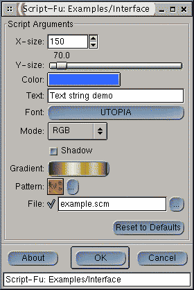
Работа с текстом
Теперь рассмотрим более полезный с
практической точки зрения пример - займемся созданием графических
заголовков, для web-страниц. В сущности нужно создать прямоугольник
заданного цвета на котором был бы расположен заданный текст
заданного размера и заданного цвета и, чтобы не усложнять процесс
излишними декоративными изысками, в качестве дополнительного эффекта
выберем что-нибудь простое, пусть, например, буквы отбрасывают тень,
тень тоже должна быть заданного цвета и заданной степени размытия.
Таким образом результирующее изображение будет определяться заданием
восьми параметров: размер текста, собственно текст, шрифт, которым
текст должен быть написан, цвет фона, цвет тени, степень размытия
тени и величина смещения тени относительно текста, при этом,
поскольку мы планируем использовать полученные изображения в
заголовках web страниц, неплохо было бы задавать размер текста не в
пикселях а в более привычном виде, например H1, H2 и H3, а скрипт
пусть уж сам с пикселями разбирается.
Интерфейс будущего скрипта вырисовывается в следующем виде: окно
должно содержать выпадающий список для выбора типа заголовка, поле
для ввода текста, кнопку выбора шрифта, кнопки выбора цветов фона,
текста и тени и, например, слайдеры для задания степени размытия и
смещения тени. Можно начинать.
GIMP предлагает две основных функции для размещении текста в
изображении: gimp-text и gimp-text-fontname, на
мой взгляд удобнее использовать вторую. DB Browser поведает нам, что
функция gimp-text-fontname добавляет текст в точку с
указанными координатами в виде плавающей области выделения или в
виде нового слоя. Функция имеет следующие аргументы:
image
- изображение (точнее его ID) в которое надо вставить
текст.
drawable - доступная для рисования область - в
данном случае слой над которым будет помещен текст в виде плавающей
области, если этот параметр указать равным -1, то текст будет
вставлен в изображение как новый слой.
x - отступ по
горизонтали от левого края изображения до левого края описанного
вокруг текста прямоугольника.
y - отступ по вертикали от
верхнего края изображения до верхнего края описанного вокруг текста
прямоугольника.
text - собственно текст.
border
- "зазор" вокруг текста.
antialias - сглаживание
включено/выключено.
size - размер
шрифта.
size_type - в чем задан размер шрифта -
PIXELS/POINTS.
fontname - строка определяющая шрифт в
соответствие с Соглашением о логическом описании шрифтов для
X.
Возвращает функция gimp-text-fontname ID текстового
слоя - если текст был вставлен как новый слой или ID плавающей
области выделения. Цвет текста будет соответствовать текущему цвету
переднего плана.
Как водите, функция gimp-text-fontname требует указать в
какое изображение требуется поместить текст, другими словами на
момент вызова gimp-text-fontname изображение уже должно
быть создано, но до того, как будет создан текстовый слой мы не
будем знать какого размера должно быть изображение, чтобы вместить
текст. Выход из замкнутого круга следующий: GIMP не возражает, чтобы
изображение и входящие в него слои были разного размера, поэтому при
создании текстовых логотипов обычно сначала создается изображение
произвольного размера, например 20х20 точек, затем в него помещается
текстовый слой при помощи gimp-text-fontname, потом
определяется актуальный размер текста и изменяются соответствующим
образом размеры изображения.
Таким образом план действий для нашего скрипта будет такой:
1. Преобразуем заданный тип заголовка H1, H2 или H3 в размер,
пусть, например H1 соответствует 240 points, H2 - 200 points и H3 -
160 points. Сделать это можно при помощи функции cond,
имеющей следующий синтаксис:
(cond ((условие1) значение1)
. . .
((условиеN) значениеN)
)
Результат запомним в переменной
tsize
2. Вычислим размер пустого пространства вокруг текста,
необходимого для того, чтобы расположить тень, как сумму величины
смещения тени и радиуса размытия тени, плюс один пиксель для
страховки. Результат запомним в переменной border
3. Создадим новое RGB изображение img при помощи функции
gimp-image-new размером 20х20.
4. При помощи gimp-text-fontname поместим текст как
новый слой txtlayer в изображение img с учетом
значения border.
5. Определим вертикальный tysize и горизонтальный
txsize размеры текста при помощи функций
gimp-drawable-height и gimp-drawable-width.
6. Вычислим окончательные размеры изображения xsize и
ysize.
7. Создадим слои размером xsize на ysize для
фона - bglayer и для тени - shlayer
8. Изменим размеры изображения при помощи функции
gimp-image-resize, разместим в изображении слои фона и тени
и очистим их.
9. Выделим текст на слое txtlayer при помощи функции
gimp-selection-layer-alpha, установим полученной области
выделения радиус размытия равный радиусу размытия тени sf,
затем выполним заливку области выделения для слоя shlayer
цветом тени scol, после чего сместим слой тени на величину
so по вертикали и горизонтали при помощи функции
gimp-layer-translate. Тень готова.
10. Поскольку текстовый слой был вставлен первым, то он оказался
самым нижним, чтобы поднять его на самый верхний уровень
воспользуемся функцией gimp-image-raise-layer-to-top, после
чего сведем изображение: gimp-image-flatten.
В переводе на Scheme это будет выглядеть следующим образом (файл
с примером webheader.scm):
;Простой графический заголовок
(define (script-fu-plain-header header text font tcol col scol sf so)
(let*
( ( tsize (cond ((= header 0) 240)
((= header 1) 200)
((= header 2) 160)))
(border (+ sf so 1))
(oldbg (car (gimp-palette-get-background)))
(oldfg (car (gimp-palette-get-foreground)))
(aa (gimp-palette-set-foreground tcol))
(img (car (gimp-image-new 20 20 RGB)))
(txtlayer (car (gimp-text-fontname img -1 border border
text 0 TRUE tsize 1 font)))
(txsize (car (gimp-drawable-width txtlayer)))
(tysize (car (gimp-drawable-height txtlayer)))
(xsize (+ txsize (* 2 border)))
(ysize (+ tysize (* 2 border)))
(bglayer (car (gimp-layer-new img xsize ysize
RGB_IMAGE "Bg" 100 NORMAL)))
(shlayer (car (gimp-layer-new img xsize ysize
RGBA_IMAGE "Shadow" 100 NORMAL)))
)
(gimp-image-undo-disable img)
(gimp-image-resize img xsize ysize 0 0)
(gimp-image-add-layer img bglayer 0)
(gimp-image-add-layer img shlayer 0)
(gimp-palette-set-background col)
(gimp-edit-clear bglayer)
(gimp-edit-clear shlayer)
(gimp-selection-layer-alpha txtlayer)
(gimp-selection-feather img sf)
(gimp-palette-set-background scol)
(gimp-edit-fill shlayer 1)
(gimp-selection-none img)
(gimp-layer-translate shlayer so so)
(gimp-image-raise-layer-to-top img txtlayer)
(gimp-image-flatten img)
(gimp-palette-set-background oldbg)
(gimp-palette-set-foreground oldfg)
(gimp-display-new img)
(gimp-image-undo-enable img)
)
)
(script-fu-register "script-fu-plain-header"
"‹Toolbox›/Xtns/Script-Fu/Examples/Plain header"
"Plain webpage header creation"
"FatCat"
""
"2001"
""
SF-OPTION "Header type" '("H1" "H2" "H3")
SF-STRING "Header text" "Plain webpage header"
SF-FONT "Header font" "-*-utopia-bold-r-*-*-*-*-*-*-*-*-*-*"
SF-COLOR "Text color" '(15 3 160)
SF-COLOR "Background color" '(255 255 255)
SF-COLOR "Shadow color" '(170 170 170)
SF-ADJUSTMENT "Shadow feather" '(4 1 10 1 10 1 0)
SF-ADJUSTMENT "Shadow offset" '(2 0 10 1 10 1 0)
)
Скрипт вызывается через главное меню GIMP: Xtns > Script-Fu
> Examples > Plain header. Окно скрипта имеет следующий вид:
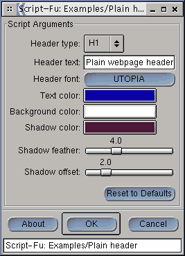
А вот пара примеров заголовков, сгенерированных описанным
скриптом:
Командная строка против графического интерфейса
Как было
показано выше, скрипты можно запускать не только через меню, но и
через командную строку SIOD, что в некоторых случаях может оказаться
предпочтительнее, если вернуться к нашему примеру с web-заголовками,
то можно представить себе следующую ситуацию - однотипных заголовков
нужно сделать много и сразу, тогда удобнее было бы написать
небольшую программку, которая бы эти самые заголовки штамповала. При
этом, если стиль заголовка не меняется от раза к разу, можно
сократить количество входных данных оставив только тип заголовка и
текст. Кроме того рассматривать на экране, что именно там получилось
не обязательно, лучше было бы, если заголовки сразу записывались бы
в файлы. Вызов регистрационной функции тоже не требуется, поскольку
интерфейс нам не нужен.
Ниже приведен текст скрипта, генерирующего web-заголовки,
модифицированный для запуска из командной строки SIOD (файл с
примером weblogo.scm):
;Простой графический заголовок
(define (my-plain-header header text filename)
(let*
( (font "-*-utopia-bold-r-*-*-*-*-*-*-*-*-*-*")
(tcol '(15 3 160))
(col '(255 255 255))
(scol '(170 170 170))
(sf 4)
(so 2)
(tsize (cond ((equal? header "H1") 240)
((equal? header "H2") 200)
((equal? header "H3") 160)))
(border (* sf 1.5))
(oldbg (car (gimp-palette-get-background)))
(oldfg (car (gimp-palette-get-foreground)))
(aa (gimp-palette-set-foreground tcol))
(img (car (gimp-image-new 20 20 RGB)))
(txtlayer (car (gimp-text-fontname img -1 border border
text 0 TRUE tsize 1 font)))
(txsize (car (gimp-drawable-width txtlayer)))
(tysize (car (gimp-drawable-height txtlayer)))
(xsize (+ txsize (* 2 border)))
(ysize (+ tysize (* 2 border)))
(bglayer (car (gimp-layer-new img xsize ysize
RGB_IMAGE "Bg" 100 NORMAL)))
(shlayer (car (gimp-layer-new img xsize ysize
RGBA_IMAGE "Shadow" 100 NORMAL)))
)
(gimp-image-undo-disable img)
(gimp-image-resize img xsize ysize 0 0)
(gimp-image-add-layer img bglayer 0)
(gimp-image-add-layer img shlayer 0)
(gimp-palette-set-background col)
(gimp-edit-clear bglayer)
(gimp-edit-clear shlayer)
(gimp-selection-layer-alpha txtlayer)
(gimp-selection-feather img sf)
(gimp-palette-set-background scol)
(gimp-edit-fill shlayer 1)
(gimp-selection-none img)
(gimp-layer-translate shlayer so so)
(gimp-image-raise-layer-to-top img txtlayer)
(set! final (car (gimp-image-flatten img)))
(gimp-palette-set-background oldbg)
(gimp-palette-set-foreground oldfg)
(gimp-convert-indexed img 0 0 8 FALSE FALSE "")
(file-gif-save 1 img final filename filename TRUE FALSE FALSE FALSE)
(gimp-image-set-filename img filename)
(gimp-image-clean-all img)
(gimp-display-new img)
(gimp-image-undo-enable img)
)
)
Исходные данные следующие: тип заголовка (H1, H2 или H3),
текст и имя файла, в который будет помещен заголовок. Все остальные
параметры, такие как цвета фона, текста и тени, тип шрифта, величина
смещения и радиус размытия тени задаются непосредственно в теле
функции. Кроме этого добавлено еще два действия: полученное и
сведенное изображение индексируется при помощи функции
gimp-convert-indexed (остается восемь цветов и запрещается
color dithering), после чего индексированное изображение сохраняется
в файл в формате GIF при помощи функции
file-gif-save. Для
контроля полученного результата сгенерированное изображение можно
вывести на экран:
gimp-display-new (если Вы не хотите
выводить ничего на экран - закоментируйте эту строчку). Не смотря на
то, что изображение было сохранено в файле в заголовке окна будет
написано "Untitled", если Вы хотите видеть там имя соответствующего
файла, его надо установить при помощи функции
gimp-image-set-filename. При попытке закрыть изображение
GIMP выведет диалог, в котором нужно подтвердить закрытие даже если
Вы ничего не меняли, чтобы этот диалог не выводился нужно сбросить
dirty count в 0 - это делается при помощи функции
gimp-image-clean-all.
Теперь все готово, можно попробовать запустить скрипт через
командную строку консоли SIOD. Для этого сохраните файл с примером
weblogo.scm в
своей домашней директории и запустите консоль (Xtns > Script-Fu
> Console). Теперь загружаем файл с описанием функции
my-plain-header и запускаем скрипт:
=> (load "weblogo.scm")
()
=> (my-plain-header "H1" "Web-logo test" "weblogotest.gif")
(1)
На экране должно появиться изображение, окно которого имеет
заголовок "weblogotest.gif-*.* (indexed)", а в Вашей домашней
директории должен появиться соответствующий файл.
Несколько вызовов my-plain-header можно объединить в
один файл, например так (logomaker.scm):
;пример "командного файла" для построения набора заголовков
(my-plain-header "H1" "1. First level header" "h10.gif")
(my-plain-header "H2" "1.1 Second level header" "h20.gif")
(my-plain-header "H3" "1.1.1 Third level header" "h30.gif")
(my-plain-header "H1" "2. Another first level header" "h11.gif")
(my-plain-header "H2" "2.1 Another second level header" "h21.gif")
(my-plain-header "H3" "2.1.1 Another third level header" "h31.gif")
После загрузки этого файла он сразу начнет выполняться:
=> (load "logomaker.scm")
()
В результате мы получим шесть картинок и шесть соответствующих
файлов:
- h10.gif
- h20.gif
- h30.gif
- h11.gif
- h21.gif
- h31.gif
Если у Вас имеется один или несколько файлов, содержащих скрипты,
расчитанные на запуск через командную строку или описания каких либо
полезных функций и Вам не хочется загружать их вручную - этот файл
(или файлы) можно поместить в одну из директорий, где GIMP ищет
скрипты - все определения будут загружены при старте, хотя в PDB вы
этих функций не увидите, их можно вызывать через командную строку
консоли.
Скрипты работающие с готовым изображением изображением
Чтобы
заставить скрипт работать с уже готовым и открытым изображением
нужно передать ему в качестве параметров ID изображения, обработку
которого нужно выполнить и ID активного слоя в этом изображении.
Главная функция такого скрипта должна иметь в начале списке
аргументов две переменные, которые будут использованы для
идентификации текущего изображения и текущего слоя, а в
регистрационной функции в первых двух строках описания элементов
интерфейса должно присутствовать описание двух фиктивных элементов
SF-IMAGE и
SF-DRAWABLE значения по умолчанию для
которых должно быть 0. В окне интерфейса скрипта эти элементы никак
отражены не будут - они используются, так сказать, в темную для
передачи данных в главную функцию.
Пункт меню, вызывающий скрипт, работающий с готовым изображением,
удобнее разместить в меню изображения, для этого строчка,
описывающая место в меню должна начинаться не с ‹Toolbox›,
а с ‹Image›.
Если для самостоятельных скриптов создание информации для Undo
запрещалось на время выполнения скрипта, то при обработке готовых
изображений используется другой подход - информация для Undo
создается таким образом, чтобы все выполненные скриптом действия
можно было отменить за один шаг. Делается это при помощи функций
gimp-undo-push-group-start и
gimp-undo-push-group-end - все что было проделано между
обращениями к этим двум функциям может быть отменено за один шаг
Undo.
В самостоятельных скриптах для того, чтобы вывести изображение на
экран использовалась функция gimp-display-new, но так как
теперь обрабатывается уже открытое изображение, его не нужно
создавать, а нужно просто обновить, для того используется функция
gimp-displays-flush, которая сделает все проделанные
скриптом изменения видимыми.
Теперь рассмотрим пример. Пусть у нас есть цветное изображение,
содержащее прозрачный слой, на этом прозрачном слое что-то
нарисовано, требуется к этому чему-то добавить тень. Действовать мы
будем примерно так же как и в предыдущем примере, то есть в
существующее изображение мы добавим слои для фона и для тени, слой
фона зальем заданным цветом, затем выделим непрозрачные области на
исходном слое и используем полученную область выделения для
построения тени, а затем вытащим исходный слой на верхнюю позицию
(файл с примером add-shadow.scm):
;Добавление тени
(define (script-fu-add-shadow image drawable sf so scol col)
(let*
(
(oldbg (car (gimp-palette-get-background)))
(xsize (car (gimp-image-width image)))
(ysize (car (gimp-image-height image)))
)
(gimp-undo-push-group-start image)
(set! bglayer (car (gimp-layer-new image xsize ysize
RGBA_IMAGE "Bg" 100 NORMAL)))
(set! shlayer (car (gimp-layer-new image xsize ysize
RGBA_IMAGE "Shadow" 100 NORMAL)))
(gimp-image-add-layer image bglayer -1)
(gimp-image-add-layer image shlayer -1)
(gimp-palette-set-background col)
(gimp-edit-clear bglayer)
(gimp-edit-fill bglayer 1)
(gimp-edit-clear shlayer)
(gimp-selection-layer-alpha drawable)
(gimp-selection-feather image sf)
(gimp-palette-set-background scol)
(gimp-edit-fill shlayer 1)
(gimp-selection-none image)
(gimp-image-raise-layer-to-top image drawable)
(gimp-layer-translate shlayer so so)
(gimp-palette-set-background oldbg)
(gimp-undo-push-group-end image)
(gimp-displays-flush)
)
)
(script-fu-register "script-fu-add-shadow"
"‹Image›/Script-Fu/Examples/Add Shadow..."
"Adds shadow to alpha"
"Fatcat"
"fatcat"
"2001"
"RGBA"
SF-IMAGE "" 0
SF-DRAWABLE "" 0
SF-ADJUSTMENT _"Shadow feather" '(4 2 25 1 10 0 0)
SF-ADJUSTMENT _"Shadow offset" '(2 2 25 1 10 0 0)
SF-COLOR _"Shadow color" '(170 170 170)
SF-COLOR _"Background color" '(255 1255 255)
)
Для проверки понадобиться цветное изображение, содержащее
картинку на прозрачном слое. Скрипт вызывается через меню
изображения - в разделе "Script-Fu" должен появиться раздел
"Examples", содержащий пункт "Add Shadow". Результат будет примерно
таким:
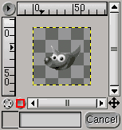
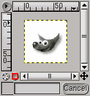
Обратите внимание, что если Вы попытаетесь вызвать скрипт "Add
Shadow" для изображения, тип которого отличается от разрешенного
(например, для серого или не содержащего альфа-канала), то
соответствующий пункт меню будет неактивен.
Ошибки и их источники
Перед первым запуском свежеиспеченного
скрипта следует предпринять охранительные меры, такие как
скрещивание пальцев, плевание через левое плечо, пение мантр вслух
и, возможно, другие, но в той же степени надежные и проверенные.
Если все это не помогает и скрипт работать отказывается, придется
бороться с ошибками собственными руками.
Как уже было сказано, основной источник ошибок это неправильная
расстановка скобок, причем, если текст программы достаточно длинный,
то вполне вероятна ситуация, когда скобки расставлены неправильно,
но баланс открытых и закрытых тем не менее соблюдается, и тогда
текст программы с точки зрения нтерпретатора будет иметь совсем не
тот смысл, который вы в него вкладывали, в результате Вы будете
получать сообщения об ошибках вроде "несвязанная переменная" или
"неправильно заданы аргументы", а на самом деле проблема в скобках.
Так что к скобкам нужно подходить аккуратно и в ахавой ситуации
правильность расстановки скобок во всей программе, это то, что нужно
проверять в первую очередь. Дальше я про скобки говорить ничего не
буду, "проверить скобки" - это будет, так сказать, совет по
умолчанию в любом случае. Существенно облегчает жизнь применение
текстового редактора, который умеет подсчитывать баланс скобок,
кроме того имеет смысл организовывать текст исходя из Ваших
представлений о читабельности, т.е. делайте всякие там отступы,
выделяйте логически связанные блоки и т.д.
Самая неприятная ситуация, это когда GIMP не регистрирует
свеженаписанный (или измененный) скрипт и при этом никаких сообщений
- не регистрирует и все тут. Проверьте имя файла скрипта - длжно
быть расширение .scm - обязательно! Убедитесь, что файл помещен в
правильную директорию. Проверьте правильность регистрационной
функции и соответствие элеменов интерфейса аргументам главной
функции. В особо тяжелых случаях можно попытаться применить
хирургические методы - попробуйте закоментировать все кроме
заголовка главной функции и регистрационной функции, тогда ошибки в
теле скрипта не будут иметь влияния на регистрацию. Добившись
успешной регистрации комментарии можно снять - если беда вернулась,
ищите там, где было закоментировано.
Успешно прошедшая регистрация еще не гарантирует правильного
исполнения и вы можете получить сообщение об ошибке на стадии
выполнения скрипта. Далее я попытаюсь вспомнить и перечислить те
источники ошибок, с которыми чаще всего сталкивался сам, возможно
Вам это поможет:
- Имя какой-либо функции из PDB написано с ошибкой.
- Для какой-либо функции из PDB неправильно указан список
аргументов - их не хватает или они не в том порядке.
- Ошибка в имени переменной, например везде "size", а где нибудь
написано "sise".
- В определении списка не хватает одиночной кавычки.
- Значение, возвращаемое какой-либо функцией и PDB связывается с
переменной, потом эта переменная где нибудь используется в качестве
аргумента. Все функции из PDB возвращают список, даже если это
список всего из одного элемента, чтобы использовать возвращенное
значение, нужно сначала извлечь его из списка.
- Среди элементов интерфейса есть переключатель и он
соответствует какому-то аргументу главной функции (ну, например,
пусть его имя "sw"), и где-то в недрах скрипта переменная
sw используется в предикате как логическая, например, так:
(if sw (...) (...)), при этом состояние переключателя не
оказывает никакого влияния на ход выполнения скрипта. Устанавливая
значения по умолчанию для переключателей Вы можете пользоваться
"константами" TRUE и FALSE, что соответствует 1 и 0, несмотря на то,
что TRUE в переводе означает ИСТИНА, а FALSE - ЛОЖЬ, эти константы
не имеют никакого отношения к логическим значениям "истина" и "ложь"
с точки зрения Scheme. В Scheme "ложь" это пустой список, а все, что
не ложь - то истина, поэтому условие должно выглядеть следующим
образом: (if (= sw TRUE) (...) (...)).
- ошибка в строке, определяющей шрифт по умолчанию.
- в текст скрипта внесены изменения файл сохранен, но изменений
не чувствуется, - Вы забыли про Refresh.
Возможно SIOD распологает какими-нибудь отладочными
возможностями, но к сожалению я не располагаю какой-либо полезной
информацией на эту тему. В качестве доморощенного средства можно
порекомендовать следующее: вставлять в текст в "критических" точках
вызовы функции print, чтобы отследить какие значения
принимают переменные, но чтобы это работало скрипт, ясное дело,
придется запускать из командной строки консоли.
Успешного скриптинга!
Сергей Головко
P.S.
Если Вы дочитали текст до этого места, значит упорства
и настойчивости Вам не занимать :) и может быть у Вас сложлось
какое-нибудь мнение о прочитанном, буду весьма признателен, если Вы
со
мной этим мнением
поделитесь.